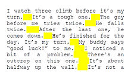
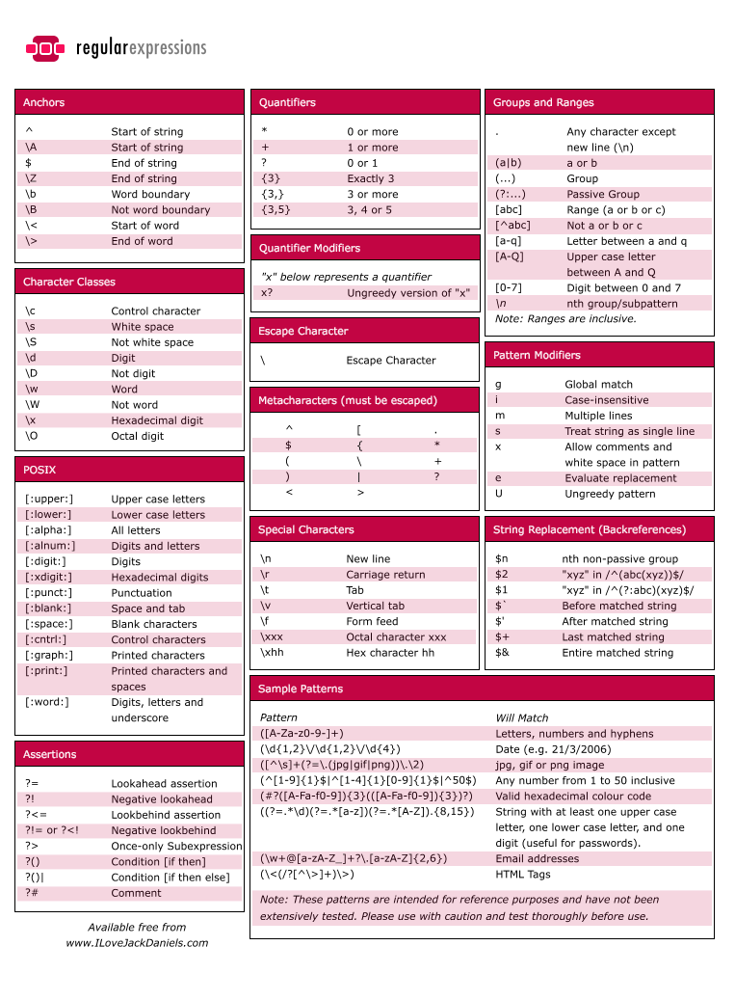

Regular Expressions
The Power of the Regex
11/23/2015

Week 8 Technical Blog Post
A regular expression is a block of code, or expression the performs a search for a particular piece or pieces of data in a page or text. Regular Expressions are often referred to by the truncated name "regex" or "regexp" or "regexes"(plural)."he concept arose in the 1950s, when the American mathematician Stephen Kleene formalized the description of a regular language, and came into common use with the Unix text processing utilities ed, an editor, and grep (global regular expression print), a filter." ~Wikipedia~
You've probably used regexes before whether you're aware of it or not. Many search engines use them to locate whatever search term you give them. Word processors and text editors also use them for search and replace functions. Most languages have some form of regular expressions including Perl, JavaScript, Ruby, AWK, and Tcl, and others via a standard library, for example .NET languages, Java, Python, POSIX C and C++ (since C++11). Other languages offer regular expressions via a library.The regular expression here:
(?<=\.) {2,}(?=[A-Z])
matches at least two spaces occurring after period (.) and before an upper case letter as highlighted in the text below.
Each character in a regex is known as a "metacharacter", which is a character that has a special meaning on a program, such as a shell interpreter or a regex engine or a "regular" character, which has what's known as a literal meaning. the expression defines what pattern in the text that it will look for based on these characters. THey can search for a very specific chunk of data or a more broad generalization or category of pieces of data. An example of each would be if you wanted to find the term "ECMAScript", that would be called a precise equality because the expression will return any terms that fit that description precisely. More generally, you could search for any email addresses within a page or text:
The regular expression here:
\b[A-Z0-9._%+-]+@[A-Z0-9.-]+\.[A-Z]{2,}\b
describes a series of characters(letters, digits, punctuation) that are followed by an @ symbol and then followed by another series of characters, then followed by a single dot and 2 or more letters. Can you guess what this expression will search for?.....
If you said an email address, you're right! This will search through a file and locate any instances that fit the structure of an email such as dandersen2@gmail.com that has a name@name.anything type structure. As you can probably imagine, the applications of regular expressions are many and they are used frequently across almost all languages and types of programs.They are indeed a powerful weapon in your code arsenal. To learn more about how they work or how to use them visit some of these sites:
~Wikipedia - Regular Expressions~
~W3 Schools JavaScript Regular Expressions~

Courtesy of:
www.ILoveJackDaniels.com